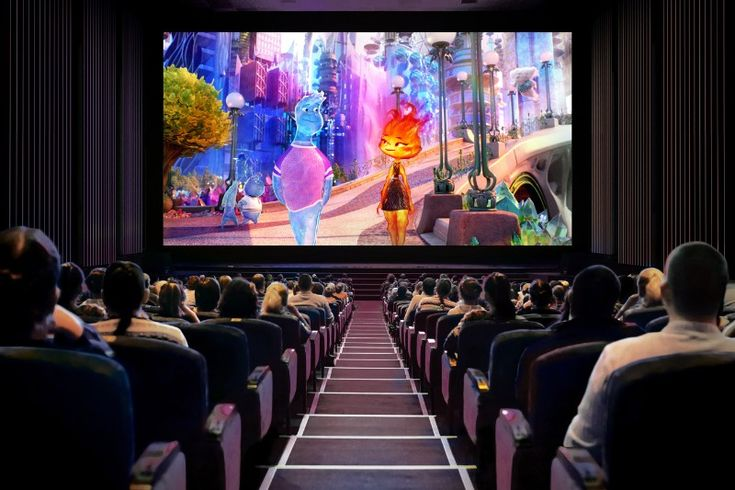

List Film Favorit
Memuat data...
Belum ada film favorit yang ditambahkan.
| No | Judul Film | Sutradara | Tahun Rilis | Rating |
|---|---|---|---|---|
| 1 | Speed and Love | Yu Chungchung | 2025 | 9.8/10 |
| 2 | Hidden Love | Lee Ching Jung | 2023 | 9.7/10 |
| 3 | The First Frost | Chu Yu Ning | 2025 | 10/10 |
| 4 | Never Ending Summer | Xu Zhao Ren | 2026 | 9.9/10 |
| 5 | Zootopia 2 | Jared Bush & Byron Howard | 2025 | 9/10 |
| 6 | Raya and The Last Dragon | Don Hall dan Carlos López Estrada | 2021 | 9.8/10 |
